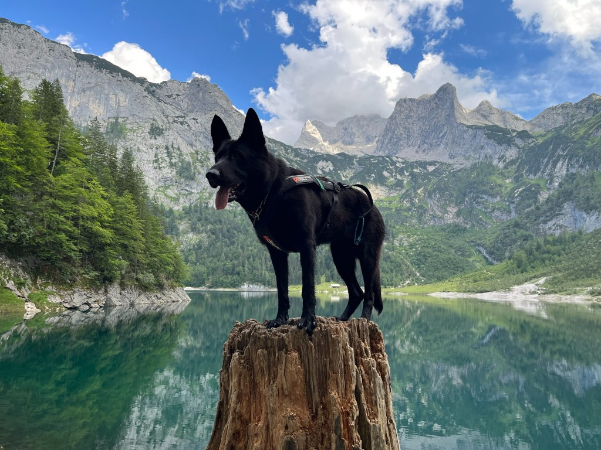

„Každé místo má svůj vlastní rytmus."
Zapisuji zážitky z míst, kde dýchá les, vlní se voda, pulzuje město… a svobodně běhá Arya…
Číst článkyVyber kontinent, stát nebo hashtag — mapa i články se přizpůsobí.
Klikni na špendlík — otevře se náhled článku. Zelené značky = cesty se psem.
Každý příběh nese hashtagy: kontinent · stát · město · #se-psem

Cestuji pomalu,
se psem a otevřeným srdcem.
Miluju přírodu, jezera, moře, cestování, kávičku a Aryu :). Můj parťák je Arya — černá fena německého ovčáka. Spolu hledáme stezky, kde je klid, zeleň a prostor na procházku. Tento web je můj jemný deník míst, která stojí za to sdílet...